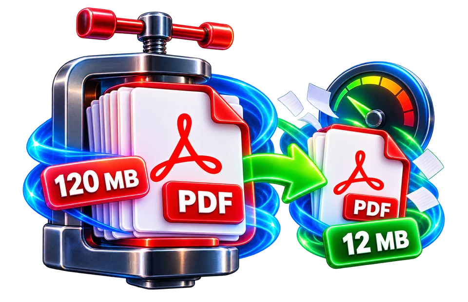

01
Choose your PDF
Use DoKitly to compress a PDF online when a document is too large for email, application portals, document systems or mobile storage. The tool shows the original size, offers three compression levels…
Optimize and re-save a PDF to reduce file size where possible.
Use DoKitly to compress a PDF online when a document is too large for email, application portals, document systems or mobile storage. The tool shows the original size, offers three compression levels and reports the actual output size after processing. Less Compression mainly re-saves the PDF efficiently, while stronger levels can rasterize pages as JPEG images, which usually reduces size more aggressively but can also reduce selectable text and visual quality. Keep the original PDF as your master copy when the document is important or may need higher-quality printing later.

Use DoKitly to compress a PDF online when a document is too large for email, application portals, document systems or mobile storage. The tool shows the original size, offers three compression levels…
A scanned 60-page report may shrink substantially when embedded photographs are resampled, while a text-only PDF might barely change. That difference is normal because PDFs contain different kinds of…
A scanned 60-page report may shrink substantially when embedded photographs are resampled, while a text-only PDF might barely change. That difference is normal because PDFs contain different kinds of…
A scanned 60-page report may shrink substantially when embedded photographs are resampled, while a text-only PDF might barely change. That difference is normal because PDFs contain different kinds of objects and…
Use the real tool above to verify the result. The example illustrates the workflow, not a guaranteed outcome.
Yes. You can use the compressor without creating an account.
Start with Medium for general sharing. Use Less for better fidelity and Maximum when file size is the main priority.
Medium and Maximum can reduce visual quality because pages may be rasterized and JPEG-compressed.
It can, especially for already optimized PDFs. The current tool keeps the original bytes when its result would be larger.
Yes. Compare the output size with your email provider's attachment limit before sending.
Rasterized compression turns pages into images, so searchable or selectable text can be lost at stronger levels.

A smaller file is not always a better file. Think about the document on the other end: will somebody read fine print, zoom into a diagram, print the pages, or simply file it away? Compression should help that person, not leave them struggling with blurred text. DoKitly gives you levels to try, plus an original-versus-output comparison. Use that comparison as a starting point, then open the downloaded result and inspect the actual pages. A large scanned report may offer more room for reduction than an already compact text-based contract. That is normal, and it is better to explain the difference than to promise a magic percentage.
Imagine an application portal asking for a PDF under its size limit. You have a 12-page certificate bundle with stamps and small text. First keep the original untouched. Compress a copy using a moderate setting, check the downloaded size, and zoom into the smallest stamp and signature. If the file remains too large, try a stronger setting and compare again. If the text starts breaking up, return to the clearer version. What matters is getting a document that both fits the portal and remains usable. Compression cannot repair an illegible scan, remove a password you do not know, or guarantee acceptance by a third-party portal.
A useful habit is to judge three things together: size, clarity, and purpose. For a quick email, a small and readable file may be enough. For an archival document, preserving subtle details may be more important than shaving off every kilobyte. Text-heavy PDFs can already be efficient; repeated recompression may achieve little. Signed PDFs deserve extra care because modification can invalidate some digital signatures. Also check page count and orientation after exporting. If your first attempt looks worse, stop and choose the original or a less aggressive setting—good document handling includes knowing when not to compress.
Use DoKitly to compress a PDF online when a document is too large for email, application portals, document systems or mobile storage. The tool shows the original size, offers three compression levels and reports the actual output size after processing. Less Compression mainly re-saves the PDF efficiently, while stronger levels can rasterize pages as JPEG images, which usually reduces size more aggressively but can also reduce selectable text and visual quality. Keep the original PDF as your master copy when the document is important or may need higher-quality printing later.
A scanned 60-page report may shrink substantially when embedded photographs are resampled, while a text-only PDF might barely change. That difference is normal because PDFs contain different kinds of objects and…
Upload a PDF, choose Less, Medium or Maximum Compression, then process the document. Review the actual before-and-after size and the preview before downloading. If a compression attempt would make the document larger, the current tool keeps the original PDF bytes instead, which avoids creating a bigger file just to report a successful compression.
Less Compression prioritizes document fidelity and uses a more conservative re-save. Medium Compression rasterizes pages at a balanced scale and JPEG quality, which can make image-heavy PDFs much smaller. Maximum Compression uses a lower render scale and stronger JPEG compression for the smallest practical output. Because these methods behave differently, the best setting depends on whether you need crisp text, a smaller upload, or a lightweight sharing copy.
PDFs can contain high-resolution images, embedded fonts, page objects and metadata. Re-saving can reduce structural overhead, while rasterization replaces complex page content with compressed page images. Rasterization is effective for many scans and image-heavy documents, but it can remove searchable/selectable text. That trade-off is why aggressive compression should be used for distribution copies rather than the only archival copy of an important document.
Choose Less when text quality and editability matter most. Medium is a sensible starting point for email attachments and routine sharing. Maximum is useful when a portal has a strict size limit and some quality loss is acceptable. Always inspect small text, signatures, diagrams and photographs in the processed preview before relying on a heavily compressed copy.
Mail providers and application portals often limit attachment size. A smaller PDF uploads faster and is easier to open on mobile data. If a form specifies a maximum size, begin with Medium and only move to Maximum if needed. If the resulting file is still too large, splitting a long document or reducing source-image resolution may be more effective than repeatedly recompressing the same PDF.
Processing happens through the browser-based tool, but performance still depends on browser memory and the PDF libraries used by the page. Very large PDFs or unusual page content may take longer. Password-protected files can fail until they are unlocked. If text becomes blurry at Maximum Compression, use Medium or Less instead. Keep an original copy before aggressive compression.
Before sharing the compressed file, check the first and last pages, a page with small text, any signatures or stamps, and at least one image-heavy page. Compare the actual output size rather than relying only on the estimate shown before processing. If the PDF will be printed or archived, keep the original and use the compressed copy only for delivery. Recompressing an already compressed PDF repeatedly can reduce quality without producing a meaningful size saving.
Some PDFs are already heavily optimized, especially files exported by modern office software or previously compressed scans. In those cases, additional compression may save very little or can even make the file larger. The DoKitly compressor reports the actual result and keeps the original bytes when its processed output would be bigger, which is more useful than forcing a nominally compressed file with no practical benefit.
A scanned 60-page report may shrink substantially when embedded photographs are resampled, while a text-only PDF might barely change. That difference is normal because PDFs contain different kinds of objects and compression opportunities. If the compressor offers quality settings, test a copy and zoom into small labels, signatures, QR codes and fine tables before choosing the smallest file. A lower file size is not useful if important information becomes illegible. Some processing approaches rebuild pages as images, which can sacrifice searchable text, link annotations or interactive structure. Open the downloaded PDF in an independent viewer and compare page count and key content with the original.
No. Some PDFs have already been optimized, and some types of content compress poorly. Compare the actual file size instead of expecting a fixed percentage.
Changing a signed PDF may invalidate a digital signature. Keep the original and verify signature status before relying on an exported copy.
Open the result at 100% and higher zoom, check page count, and inspect the smallest important text or stamp.